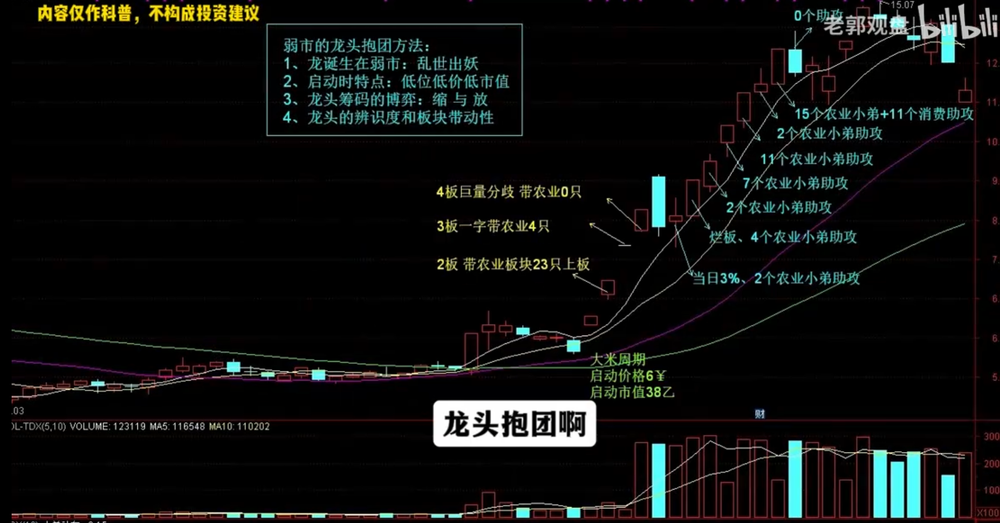

个股 × 成交量 × 题材涨停
每天一列 · 横向滚动查看全部日期 · 点击日期展开名单
MESSI-10 / 资料库 / 02
主升看领涨，轮动看反推，结束看助攻。
沿着同一条时间轴，看核心如何从带领题材，走到由题材助攻维持趋势。每个节点都回到个股、题材、涨停数量三个事实。
进入四股联动复盘 ↓01 / 周期骨架
依据指定 Notion 与交易手册整理。以下是观察顺序；个股是否走完全部阶段，回到案例证据确认。
震荡或下行、量能萎缩，题材轮动快。原文启动特征：低位、低价、低市值。
看市场与起点主动性、人气与身位突出；前3—4板容易加速，题材有跟随涨停。
核心 → 题材题材涨停减少，领涨性减弱。核心放量换手，题材热度尚未完全消失。
主升 → 轮动补涨先走强，再反推高辨识度核心；助攻强弱影响加速或震荡推进。
题材 → 核心题材不再出现涨停，核心同步转弱或收出大阴线，检查抱团是否瓦解。
助攻 + 承接02 / 四股同框研究
每个交易日一列，日期、个股表现、题材数量与下方K线对齐。横向滚动逐日阅读，点击日期查看完整名单。
每天一列 · 横向滚动查看全部日期 · 点击日期展开名单
03 / 逐日证据账本
有单列题材沿用源站分组；没有单列的日期，从当天完整涨停池逐股复核补录，并标记依据。0只表示本页规则在该日源池内未找到匹配股票。
| 交易日 | 核心表现 | 题材 / 涨停合计 / 其他涨停 | 节点记录 | 名单 |
|---|
04 / 从原文归纳
模式说明摘自你指定的资料。阶段与行情事实分别呈现，保持原文的研究语境。
“主动性：自己最主动，前面3-4个板都容易缩量顶情绪”
原文同时看领涨性、市场人气和最高身位。对应到图中，要核对核心加速时题材是否仍有跟随，涨停数量是在增加还是收缩。
“题材主升结束但不是彻底结束，仍有若干个股涨停维持题材热度”
核心断板或换手后，观察后排是否仍有涨停、是否出现新的补涨核心。放量横盘与承接失守应分别记录。
“自身辨识度出来了，但是领涨性缺乏，经常是小弟先涨后带动大哥再涨！”
用日期、题材、助攻数量和封板时间核对这条关系。仅有同日上涨，不能独立证明资金先后或因果；有分时记录时再判断谁先发动。
“小弟结束，龙头也就结束了，龙头大阴线基本宣告结束！”
这保留为原文的结束观察。单日阴线、某个分组未收录，都不能直接替代“题材没有涨停”的核实。
| 观察维度 | 题材主升龙 | 抱团趋势龙 |
|---|---|---|
| 主要关系 | 题材持续发酵，龙头领涨与梯队共振 | 已有辨识度留存，轮动题材与补涨反推核心 |
| 逐日重点 | 涨停扩散、晋级梯队、唯一性、量能 | 题材仍有多少涨停、谁在助攻、核心是否承接 |
| 量能理解 | 按原连板阶段核对量能节奏 | 原文在趋势2强调地位，不把这一点反向套到首波连板 |
| 模式边界 | 按题材主升路径判断 | 不自动等同二波买点；补涨、核心趋势与独自穿越分开复盘 |

来源与口径
周期骨架与原文摘录；从指定页面的本地同步副本读取。
题材主升转轮动、补涨反推与抱团情绪锚的模式归纳。
页面风格、题材节奏与已有农业案例数据。
历史周期研究与个人笔记整理。统计范围、数据缺口和阶段判断以各案例说明为准；案例不代表固定走势。